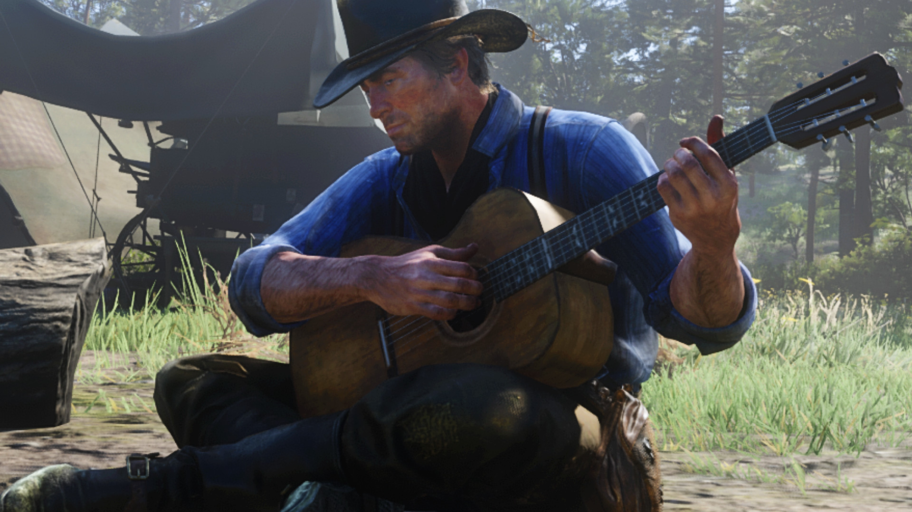

CASO CURIOSO #1: La guitarra acústica y la inmersión narrativa
Exploramos cómo los juegos de mundo abierto y ritmo pausado utilizan guitarras de cuerdas de acero, banjos y percusiones sutiles para crear atmósferas profundas. Un repaso a los paisajes sonoros que acompañan la soledad y la exploración del jugador.
VER CASO